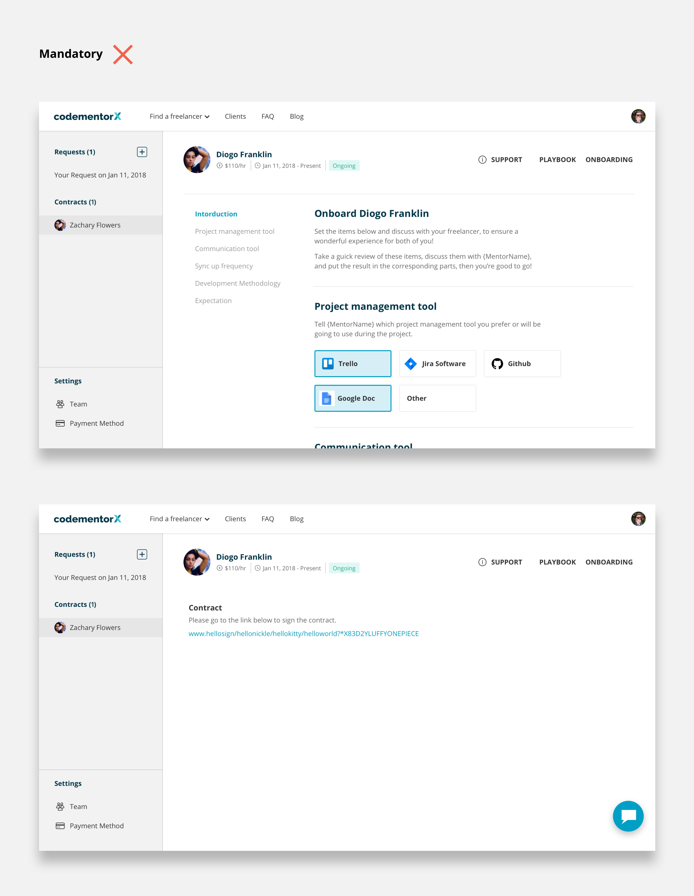
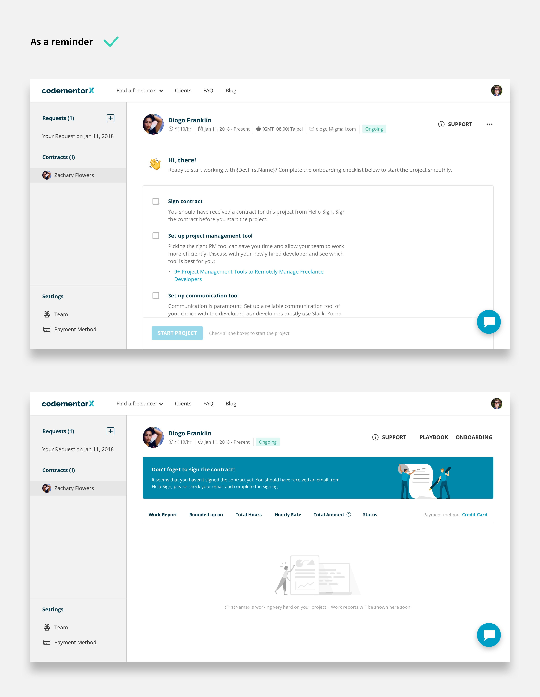
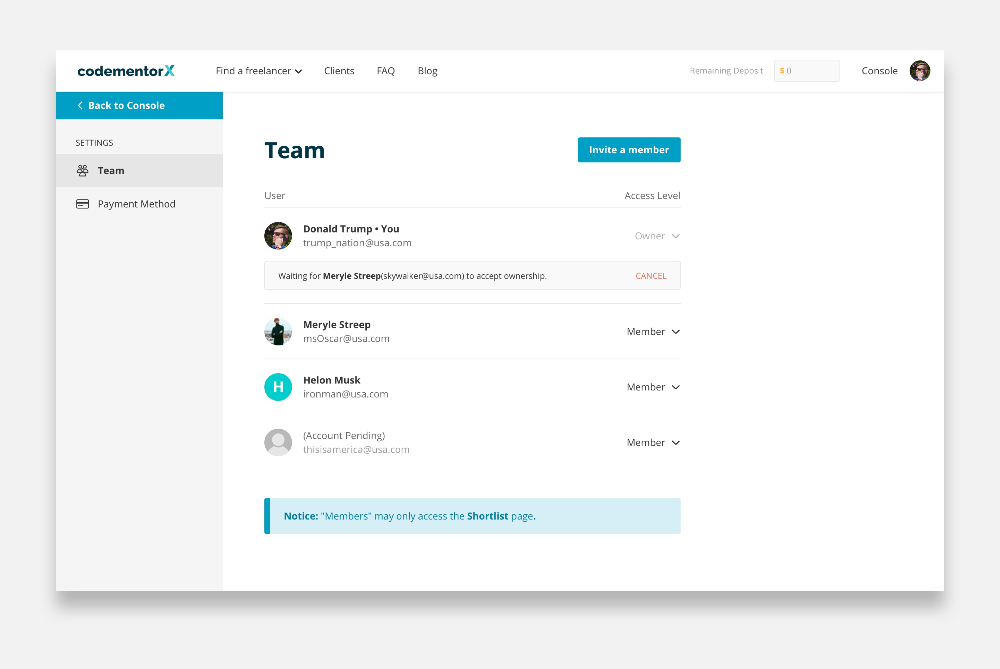

CodementorX
Freelance Software Developers Hiring Platform Redesign
Team: Yu-tang Cheng, CMX dev team, Shih-Yu Chu
Expertise: product design
Period: 2018
Project Overview
The main work I did for CodementorX (CMX) was redesigning the hiring dashboard. Since we’re an agile team, the redesigned features were designed and released separately over a long period of time. To provide a more comprehensive view of what I did for CMX, I will show all the (most important) work I did for it in this article.
CodementorX
Introduction
Design Research
Design Strategy
User Journey
Design - I
Design - II
Final Results
Design Spec
Introduction
How CMX works and problem
How CodementorX Works
CMX is a SaaS that helps clients hire freelance software developers on-demand. To hire a freelance developer, clients need to fill out an onboarding form to express their needs. From there, CMX’s salespeople will take over the hiring process, all the way from helping the clients hire a developer, to making sure they start a contract and both parties comply with it until the contract ends properly.
Problem
As you can tell from how CMX works, the hiring process highly relies on salespeople’s assistance. However, as CMX grew fast during that time, the workload for salespeople became overwhelmed. That means it’s hard for the sales team to maintain their conversion rate of turning a lead into a client, and it’s conceivable that the user's experience went bad as well.
Project Goal
The overarching goal of the redesign was to help salespeople from being overwhelmed by endless sales calls, while keeping the business growth. In another word, we wanted the hiring process to be scalable, but with the same quality hiring experience as before, or even better. Therefore, through the redesign we wanted to achieve two things:
1.
Automate the hiring process, i.e. minimize the time a salesperson spends on each client
2.
Figure out what design/step in the process can be added or removed to improve the hiring experience
Design Research
Interviews
Fullstory
Competitors
Affinity ntoe
Interview, Feedback, and Observations
The overarching questions of the research are: how the salespeople and clients interact with the old design, what portion can be automated, and what are the potential problems. I employed three methods in the research: stakeholders interviews (salespeople + project manager) user feedback analysis, and observing users’ behavior with Fullstory.
Competitive Analysis
I also investigated how our competitors design their hiring process and corresponding interaction, especially large scale competitors such as Upwork, because they must have faced the same challenge as we did. This provided me a picture of what the design paradigm looked like in the industry, and what direction I should be heading to with the design.
Key Findings
Sales team tends to not use “Chat room” for communication
Information regarding hiring request is hard to find in old dashboard (chat room)
Status of hiring process is not shown in the dashboard, but it’s a standard among competitors
Salespeople have to spend great amount of time dealing with unexpected events because clients don’t have control over those things
Client’s demographic is changing. More returning clients than before
Design Strategy

Discussion with PM and dev team
Decide What Should Be Automated and How
Based on the findings from design research, I discussed with the team and we came up with the following redesign strategy. The strategy illustrated the portion we want to automate, and what we need to be aware of in order to ensure users have great user experience.
1.
Remove chat room and replace it with a dashboard
But still allow clients to communicate with us in the dashboard
2.
Provide clear information and status about the hiring process (hiring request)
Making the process transparent can increase client’s trust. For the returning clients, this can also help them easily start a new hiring request and manage their contracts without too much help from our salespeople. We might not be able to automate the process thoroughly at this stage, but a great starting point is to show all related information in the dashboard
3.
Allow clients to start a contract hassle free on their own and manage contracts easily
Once a client decides to hire a developer, the new design should guide them to sign contracts, sync up on working style, set up communication tools, and all other things they need to agree upon before the project starts. The new design should also be friendly for returning clients to manage multiple contracts
4.
Incorporate “Team” features
For those clients who have more than one person involved in the hiring process, the new design should support them to join the process. This can reduce the time our sales team spend on communicating with clients
User Journey
Old v.s. Refactored User Journey
I charted an user journey map for the old design to make sure that I took every scenario and interaction into consideration. Based on the user research and competitive analysis, I refactored the user journey, making it more aligned with our strategy.
Old user journey

Refactored user journey (info architecture)
Design - I
The New Layout
Our first goal is to remove the chat room and replace it with a new design to display hiring and contract information clearly. I came up with four different mockups based on competitive analysis and what information we want to show in the dashboard. I evaluated which one to go with by two major following criteria:
1.
It has to look good both when the page is empty and when it’s full of content
Since our business was growing and a great percentage of users of ours are first time users, so the design needs to look legit for the first time users. For the returning users, we wanted to make sure they can easily navigate through old and new information
2.
The hiring process steps has to be clear and easy to interact with
The steps should be able to identified easily, and the guidance of what to do in each step should also be clear and intuitive

Four different mockups for layout exploration
Finally I chose layout A to proceed because it uses a progress bar to present the hiring status which matches most people’s mental model of “process”. Also, it uses two columns layout design, and only shows information about a single step in the main area, meaning that it will look good in any case so users only need to focus on the information they need at a time.
In the revised layout A (below), I also added a column for showing the list of hiring requests. For the contract page, we planned to reuse the main content (view report) from the old design, so I simply made sure that it could fit into the new design.

Final layout (A), also adding a column for displaying request and contract list
Interaction Detail – Request
The primary goal here is to make sure the interaction does align our hiring (sales) process, and users can understand it instinctively. The process can be broken down into four steps:
1. Request detail:
users can see the detail about their request that they filled out in the onboarding form
2. Consultation:
after filling out the onboarding form, users will schedule a consultation call with our sales team. They can see the information here
3. Shortlists:
users will get one or more shortlists, they can see the list here and click the link and go to shortlist page
4. Interviews:
this page will display all the candidates the users are going to interview. Once they finish the interview, they can leave a “Feedback” to let us know if they want to hire them or not
Replacing Chat with Intercom
Intercom
There’s not much of design in this but just a decision. I originally planned to design a lightweight chat room in the new dashboard, but it turned out to be too much effort for the dev team. At the same time, we realized that our sales team used Intercom in our other products. In addition, Intercom can be integrated with Slack, by which salespeople can reply to the message more in time. Therefore, we decided to use it for communicating with clients in the dashboard.
Design - II
Internal User Testing
I asked some colleagues to play with the prototype of the hiring request page, and have the following results:
1.
Menu
Users feel that the request and contract list (second column) don’t need to take a whole column because they probably won’t have “a lot” of requests or contracts. Also, users can’t focus on the main content immediately because this two-columns-menu takes too much space
2.
Progress bar
Users don’t feel like it’s a progress bar because the relationship between each step is not obvious enough
3.
Main content interaction
The interaction in the shortlist step and the interview step is not intuitive, and user can’t figure out what to do with the UI
4.
Main content layout
Some users are confused by the two different layouts between “Request detail” and the other steps. They don’t feel they are in the same process
Request Page Iteration
For the menu, I merged the two-columns-menu into one, and put the request title on top of the progress bar, making them into one nav bar. I also added a background color to the nav bar which provides a stronger hierarchy that can better help users identify the main content and the navbar.

Sidebar and navbar iteration
Regarding the content and interaction, the first interaction was more like a “sub progress” inside each card, and used background color to indicate the status of each “sub step”. Since this was confusing for users, I used a clear status tag to indicate the status and remove the concept of “sub step”. For the interview page, we also added a “reschedule” option for clients if they need it, giving them more control over the hiring process.

Shortlist and interview interaction iteration
For the main content layout, I change all the layouts into one column so the content will look more consistent through each step.

Layout iteration
Contract Page: Reminder v.s. Mandatory
To allow clients to start the page on their own, there are two things clients have to do on the contract page: sign the contract and initiate the protocol of collaboration. We considered two types of design, making it mandatory for the client to complete both of them to start the project, or simply make it a reminder which they do not need to complete before starting the projects. We finally decided to go with the “Reminder” because we reckoned that making it mandatory might be too pushy.
Sign contract
Collaboration protocol
The Team Feature
The team management page here is quite standard and simple. Clients (the owner, i.e. the person who made contact with us at the first place) can invite or remove people to/from the team. The owner can transfer the ownership in case the account “owner” is not the actual lead of the project.
Team management page
Final Results
Here’s the final design! If you go play with the prototype, there are some screens that you may not find in the design process, such as the “shortlist page”. This is because first, they are not in the scope of this revamp project; and second, if I include the process of all the features, this project will become too messy and hard to read. Enjoy the prototype!
Go to prototype
Design spec
Final step toward success
Making the design spec that is easy for developers to read is always the best practice at the end of a project. At Codementor, I will always create an interaction/layout instruction like this for developers, uploading them to Zeplin along with the design of each screen. In addition, I will also write up a comprehensive spec in a Github issue.